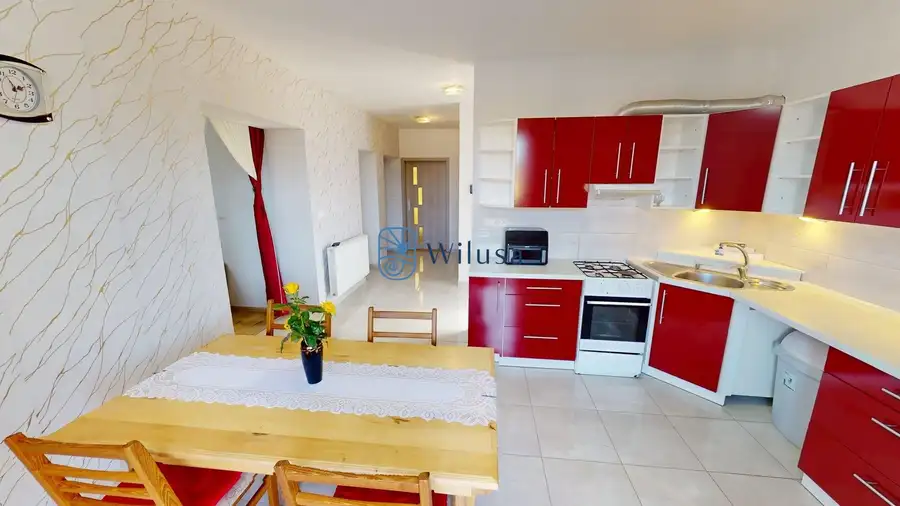
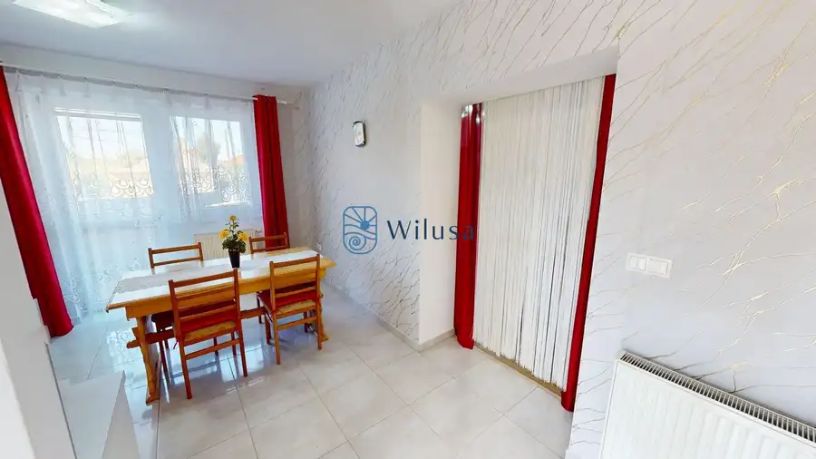
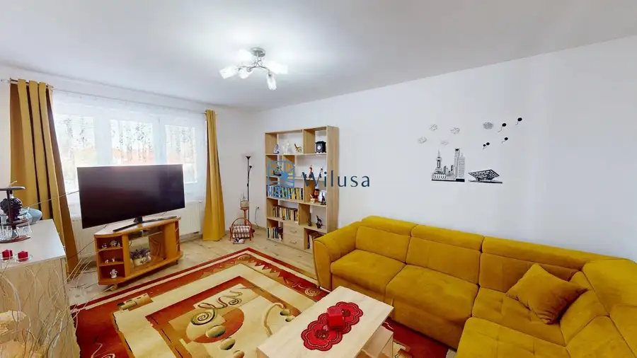

Napredaj rodinný dom s veľkým pozemkom 1 178 m² v obci Jahodná
Jahodná



- Plocha113 m²
- StavČiastočná rekonštrukcia
- VlastníctvoOsobné
O nehnuteľnosti
Hľadáte rodinný dom pre svoju rodinu s veľkým pozemkom? Tento dvojpodlažný rodinný dom v obci Jahodná môže byť pre vás ideálnou voľbou!Spoločnosť Wilusa Real Estate Vám exkluzívne ponúka na predaj priestranný rodinný dom, skolaudovaný v roku 2018, situovaný na pozemku s výmerou 1 178 m². Zastavaná plocha domu je 113 m².Dom je celý podpivničený a ponúka dostatok úložného priestoru. Nehnuteľnosť disponuje štyrmi izbami, kuchyňou, dvomi kúpeľňami, šatníkom, odkladacím priestorom, pivnicou a povalou s možnosťou uskladnenia sezónnych či nepotrebných vecí.Približne pred desiatimi rokmi boli vymenené všetky elektrické rozvody, rozvody kúrenia vrátane potrubí aj vodovodné rozvody. V celom dome sú plastové okná. Schodisko je betónové s dreveným obkladom.Dom nie je zateplený, je však pripravený na dokončenie fasády podľa predstáv nového majiteľa. K nehnuteľnosti patria tri bránové vstupy – bočný vstup na pozemok, predný vstup do garáže a ďalší bočný vstup do druhej časti dvora.Nehnuteľnosť je vo veľmi dobrom stave a ihneď obývateľná. Na dvore nájdete ovocné stromy a takmer nový drevený altánok. Dispozičné riešenie Domu:Prízemie:- vstupná chodba- kuchyňa- obývacia izba- hosťovská izba- toaleta- kúpeľňa so sprchovacím kútom- vstup do pivnice a do záhradyPoschodie:- odkladací priestor- šatník- kúpeľňa s toaletou a vaňou- spálňa- detská izba- vstup na povaluPodpivničená časť:- garáž - kotolňa- kumbál- úložná komoraInžinierske siete a technické vybavenie:- obecná voda- studňa- elektrina- plyn- kanalizácia- vykurovanie radiátormi prostredníctvom plynového kotla- ohrev teplej vody bojleromObec Jahodná sa nachádza v okrese Dunajská Streda. Preteká ňou rieka Malý Dunaj, cez ktorú vedie charakteristický točený most. V obci sa nachádza základná škola, kultúrny dom a štrkovisko, ktoré je obľúbeným miestom na letné osvieženie.Mesačané nákaldy celkom: Cena nehnuteľnosti: 214 900 €Neváhajte nás kontaktovať.V prípade záujmu o obhliadku alebo viac informácií nás neváhajte kontaktovať.Wilusa Real EstateIng. Viktória Papová0908607765papova@wilusa.skVšetky fotografie, vizualizácie, texty a marketingové materiály použité v tejto prezentácii sú vlastníctvom spoločnosti Wilusa Real Estate a podliehajú autorskoprávnej ochrane. Ich kopírovanie, šírenie alebo použitie bez predchádzajúceho písomného súhlasu spoločnosti Wilusa Real Estate je zakázané.Magyar nyelv: Nagy telken elhelyezkedő családi házat keres családja számára?Családi ház nagy telekkel Eperjesen – ideális választás családok számáraA Wilusa Real Estate kizárólagos értékesítésre kínálja ezt a tágas családi házat, amely 2018-ban kapta meg a használatbavételi engedélyt. Az ingatlan egy 1 178 m²-es telken található, a ház beépített alapterülete 113 m².A ház teljes egészében alápincézett, így bőséges tárolóhelyet biztosít. Az ingatlan négy szobával, konyhával, két fürdőszobával, gardróbbal, tárolóhelyiséggel, pincével és padlással rendelkezik, ahol szezonális vagy ritkábban használt tárgyak tárolhatók.Körülbelül tíz évvel ezelőtt az ingatlanban teljes körűen felújították az elektromos hálózatot, a fűtési rendszert és annak csővezetékeit, valamint a vízvezetékeket. A ház egészében műanyag nyílászárók találhatók. A lépcső betonból készült, fa burkolattal.A ház nincs hőszigetelve, azonban a homlokzat befejezéséhez szükséges munkálatok elő vannak készítve, így az új tulajdonos saját elképzelései szerint alakíthatja ki a végleges megjelenést.Az ingatlanhoz három kapubejárat tartozik: egy oldalsó bejárat a telekre, egy elülső bejárat a garázshoz, valamint egy további oldalsó bejárat az udvar másik részéhez.Az ingatlan nagyon jó állapotban van, és azonnal beköltözhető. Az udvaron gyümölcsfák, valamint egy szinte új, fából készült kerti pavilon található.Az ingatlan elrendezése:Földszint:előszobakonyhanappalivendégszobaWCfürdőszoba zuhanyzóvalkijárat a pincébe és a kertbeEmelet:tárolóhelyiséggardróbfürdőszoba WC-vel és káddalhálószobagyerekszobafeljárat a padlásraAlagsor:garázskazánházkamratárolóhelyiségKözművek és műszaki felszereltség:vezetékes vízsaját kútvillanygázcsatornahálózatradiátoros fűtés gázkazánnalmelegvíz-ellátás villanybojlerrelEperies község a Dunaszerdahelyi járásban található. A településen keresztül folyik a Kis-Duna, amelyen egy jellegzetes, csavart formájú híd vezet át. A községben alapiskola, kultúrház, valamint egy kavicsbánya-tó is található, amely nyáron kedvelt fürdőző- és kikapcsolódási hely.Havi teljes rezsiköltség:Az ingatlan ára: 214 900 €Ne habozzon kapcsolatba lépni velünk!Amennyiben felkeltette érdeklődését az ingatlan, vagy további információra van szüksége, illetve szeretné megtekinteni, keressen minket bizalommal.Wilusa Real EstateIng. Viktória Papová 0908 607 765 papova@wilusa.sk
Parametre
- Doprava
- Cesta, MHD
- Druh
- Rodinný dom
- Druh domu
- Klasický dom
- Dátum zverejnenia
- 15. 09. 2026
- Energetická náročnosť
- Z klasických materiálov
- Energetický certifikát budovy
- nie je
- Energie
- 200
- Orientácia
- Severovýchodná
- Plocha pozemku
- 1178 m²
- Podpivničenie
- Úplné
- Počet garáží
- 1
- Počet izieb / miestností
- 4
- Počet kúpeľní
- 2
- Počet lodžií
- 2
- Počet nadzemných podlaží
- 2
- Počet podzemných podlaží
- 1
- Počet spální
- 2
- Príprava teplej vody
- Prietokový ohrievač (plynový)
- Prístupová komunikácia
- Asfaltová
- Rok kolaudácie
- 2018
- Rok poslednej rekonštrukcie
- 2018
- Stav nehnuteľnosti
- Čiastočná rekonštrukcia
- Telekomunikácie
- Telefón, Internet
- Terás
- 1
- Terén pozemku
- Rovinatý
- Typ
- Predaj
- Typ konštrukcie
- Železobetónová
- Vlastníctvo
- Osobné
- Vybavenie
- Garáž, Pivnica, Špajza, Altánok / posedenie, Lodžia, Terasa, Predzáhradka, Vonkajšie parkovacie miesto, Technická miestnosť, Záhrada, Dielňa, Záhradný domček
- Vykurovanie
- Ústredné
- Zastavaná plocha
- 113 m²
- Zdroj tepla
- Zemný plyn
- Úžitková plocha
- 113 m²